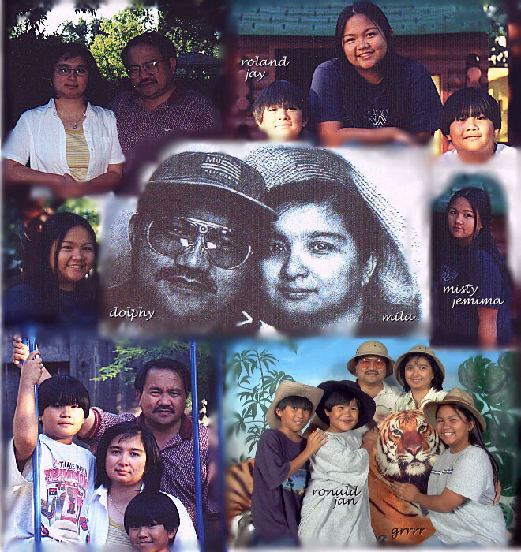

Rodolfo (Lolo/Dolphy) and family (1999)
Return to Home Page

Rodolfo/Lolo,
I still remember the scene when I first called you by your now famous
nickname. We were in 2nd year then. We were groupmates in IS (Integated
Science), along with Ed A. & 2 or 3 others whom I don't quite remember,
& we were doing an experiment at the Lab Room. May isa pang girl na
kasama natin sa group at ang gulo-gulo namin kasi parang may
pinagtatawanan kami. Naasar ka yata kaya ang sabi mo sa amin: "Hwag nga
kayong magulo." Nainis yata ako (kasi natigil kami sa bungisngisan
namin) kaya ang sabi ko: "OO na nga. Palibhasa LOLO ka na." And the rest
is history. Gulat ka , vivid pa rin sa memory ko yan. It was meant as a
joke but it stuck with you till this present day. It's really comforting
to know that you didn't get angry at me for starting that "Lolo" thing.
Baka kaya hindi ko makalimutan kasi kahit papano guilty ako. Sorry, ha?
DELTA
mailto:qcshs75@yahoo.com